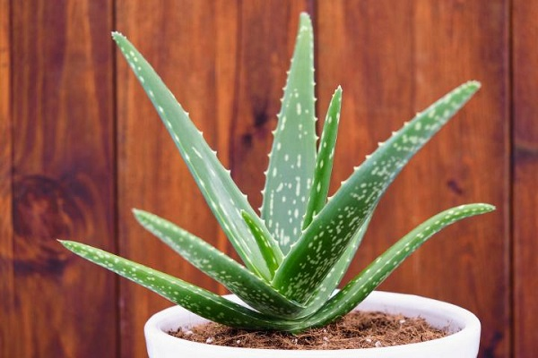

Home Remedies For Skin Care
A major indicator of healthy skin is a natural glow. But factors like stressful lifestyles, hectic work schedules, inadequate sleep, lack of nutritional diet, pollution, harmful sun rays (UVA/UVB), excessive smoking, and drinking alcohol can make your skin dull and dry . All of these are part and parcel of your life, and you cannot run away from them. However, you can surely prevent them. While you cannot hold on to your age, you can surely slow down the loss of glow and radiance from your skin.
This is where homemade beauty recipes and simple preventive tips come in handy as they are a natural and much simpler alternative to cosmetic products.
1. Turmeric:
Turmeric contains curcumin, which has strong antioxidant and anti-inflammatory properties. It eliminates the harmful free radicals that are damaging the skin. It also enhances collagen production and keeps your skin supple and glowing. Gram flour gently cleanses the skin to make it clean and bright.
You Will Need
* 1/2-1 teaspoon turmeric powder
* 4 tablespoons gram flour (also called chickpea flour)
* Milk or water
What You Have To Do
1) Mix the turmeric powder with the gram flour.
2) Add enough milk or water to this to form a paste.
3)Apply this paste on your face and neck. Leave it on for 15 to 20 minutes.
4) Rinse with plain water.
How Often You Should Do This
Do this 1-2 times a week.
2. Coconut Oil:
This remedy works best for dry and dull skin. Coconut oil locks the moisture in the skin and also nourishes it with essential fatty acids. It also protects your skin from UV radiation and enhances skin barrier function . All these factors can make your skin glow.
You Will Need
Virginal coconut oil
What You Have To Do
1) Warm up the oil slightly and apply it to the face and neck.
2) Massage for a few minutes in gentle circular motions.
3) Leave the oil on overnight.
4) You can add some sugar to the oil and use it as a scrub to exfoliate your skin once or twice a week.
How Often You Should Do This
Use coconut oil every night before going to bed.
3. Aloe Vera:
Aloe vera gel has nourishing and healing properties that rejuvenate the skin to give it a natural glow .

You Will Need
* 1 tablespoon aloe vera gel
* A pinch of turmeric
* 1 teaspoon honey
1 teaspoon milk
What You Have To Do
1) Mix all the ingredients. Apply the mixture to the face and neck evenly.
2) Leave it on for about 20 minutes.
3) Rinse with lukewarm water and pat dry.
4) How Often You Should Do This
5) Apply this face pack 1-2 times a week.
4. Baking Soda:
Baking soda exfoliates dead skin cells and neutralizes the skin’s pH. It also has antibacterial properties that can help prevent infection .

You Will Need
* 1 teaspoon baking soda
* 1 teaspoon extra virgin olive oil
* 1/2 teaspoon honey
What You Have To Do
1) Mix all the ingredients in a bowl.
2) Apply the mixture on damp face and neck using circular motions.
3) Leave it on for 10 minutes.
4) Rinse with cool water and pat dry. Moisturize as usual.
How Often You Should Do This
Apply this face pack once a week.
Note: Baking soda may irritate your skin. Hence, do a patch test before proceeding with this remedy.
5. Lemon:
Lemon contains vitamin C that bleaches and removes tan, making your skin appear brighter and radiant . The sugar granules provide an exfoliating effect to help to get rid of dead cells.
You Will Need
* 2 teaspoons lemon juice
* 2 teaspoons sugar
What You Have To Do
1) Mix the ingredients and apply the mixture on your face.
2) Scrub in a circular motion and leave it on for 10 minutes.
3) Rinse off with warm water to reveal glowing skin.
How Often You Should Do This
Do this 2 times a week.
Note: Lemon juice may make your skin photosensitive. Please apply sunscreen before stepping out.
6. Papaya:
* A few pieces of ripe papaya * 1 teaspoon Fuller’s earth (Multani mitti) * 1 teaspoon honey 1) Take a ripe papaya and cut it into small pieces. 2) Add the Fuller’s earth and honey to it. 3) Mix all of them to get a paste-like consistency. 4) Apply it all over your face and neck. 5) Keep it on for 20 minutes and then rinse with cool water. Do this once every week. Rosewater is a commonly used skin toner. It cleanses and refreshes the skin. It brightens the skin tone by stimulating blood circulation. It also balances the pH of the skin (17).
Rosewater Cotton ball Keep the rose water in the fridge for half an hour. Dip the cotton ball in the rose water and apply it all over the face and neck. Repeat this every morning and evening. This is an age-old formula for healthy and radiant skin. Cleopatra’s beauty routine always incorporated honey and milk. Raw milk contains skin-friendly ingredients, such as saturated fat, protein, calcium, and vitamin C . Honey is also known for its moisturizing and antibacterial properties. * 2 teaspoons milk * 1 teaspoon honey * 1 teaspoon besan (gram flour) 1) Mix all the ingredients to form a homogenous paste. 2) Apply all over the face and leave it on for 20 minutes. Allow the pack to dry. 3) Rinse off with warm water. Apply this 2 times a week. Banana is rich in vitamins A, B, C, and E, and minerals like potassium nourish, hydrate, and improve the overall health of the skin. They make the skin soft and glowing and also lighten blemishes .
* A ripe banana * 2 teaspoons milk * An ice cube 1) Mash the banana in the milk and apply it on the face and neck. 2) Leave it on for 15 minutes. 3) Rinse with water. Rub an ice cube all over the area for a few seconds. Apply banana on your face 1-2 times a week. Honey has soothing and humectant effects. It moisturizes your skin, retards wrinkle formation, and keeps it looking youthful . * Honey 1) Apply honey evenly on clean and damp skin. 2) Massage it for a few minutes and leave it on for another five minutes. 3) Wash the honey off with lukewarm water. You can do this every alternate day.You Will Need
What You Have To Do
How Often You Should Do This
7. Rose Water:
You Will Need

What You Have To Do
How Often You Should Do This
8. Milk:
You Will Need

What You Have To Do
How Often You Should Do This
9.Banana:
You Will Need
What You Have To Do
How Often You Should Do This
10.Honey
You Will Need
What You Have To Do
How Often You Should Do This